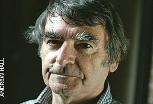

David Lodge's commercial success has not always been matched by the recognition he seeks. Literary disappointment is the theme of his new novel about Henry James, writes Julia Llewellyn David Lodge, the author of some of the most sublime comedies in the English language, is a famously dour man. While the academics in his bestselling, Booker-shortlisted novels, such as Small World and Nice Work, romped around the world, swapping wives and engaging in witty literary banter, Lodge has spent his career in the unglamorous suburbs of Birmingham with Mary, his wife of 45 years. |  | | David Lodge: a famously dour man |
Students arriving at Birmingham University, where he taught for decades (today he is Emeritus Professor), were said to be startled by the gulf between the comic perkiness of his novels and the austere lecturer standing before them. Previous interviewers have complained that he is "not a laugh a minute". Lodge does not dispute this. "I'm a bit timid, a bit anxious and more so as I get older," he acknowledges calmly. "Things that would never have upset me as a young man do terribly now, if I allow them to." His heroes, such as the shabby academic Philip Swallow, often swerve off the rails but by the final chapter have returned to their humdrum lives. Lodge too has always been ruled by caution, describing the copious sex in his books as being written from the stance of a "war correspondent, not a combatant". "Of course one occasionally longs for liberation," he smiles wryly. "But I believe monogamy is more likely to generate happiness than a lot of temporary relationships." We are sitting in Lodge's immaculate study, in his modern house in genteel Edgbaston. Aged 69, Lodge is certainly an uneffusive character: compact, dressed in a baggy cardigan, with caterpillar brows and a tight hyphen of a mouth. Yet his reserve is accompanied by subtle humour and - when he talks about his family - a touching openness. What some perceive as coldness, is, I suspect, more the result of his increasing deafness. He wears a hearing aid, but still is apt to misunderstand or simply ignore you. "I hate my deafness; it's a comic infirmity as opposed to blindness which is a tragic infirmity," he sighs. I'm here to talk about his latest novel, Author, Author, a fictional exploration of the life of Henry James. Despite critical success, James suffered all his life from poor sales and was eaten up with jealousy of his more commercially successful peers. The novel takes place in 1895, the year his play Guy Domville opened disastrously in the West End, with James being booed off stage when he took a curtain call. To rub salt in the wound, the previous year one of his closest friends, the Punch cartoonist George Du Maurier, published a novel, Trilby, which, quite unexpectedly, became the best-seller of the century. "You can imagine how difficult it was for James to control his rather ignoble feelings about his friend's good fortune," Lodge smiles. "Most artists have had a fairly similar experience. It's a delicate business, that relationship with your peer group, and I enjoyed exploring it." So who sparks Lodge's envy? Does a little something in him die when he hears about Martin Amis's riches? Does he savour bad reviews of Salman Rushdie? Lodge laughs, but refuses to be drawn. "No, no. What I did identify with was James's agonies about his dramatic career. I've gone through development hell, working for years on a screenplay and then seeing the whole thing collapse because the producers couldn't find a famous name to attach to the project. "I've experienced damaging, destructive reviews, especially of my second play Home Truths, into which I put considerable effort." ("Unconvincing stage play rewritten into even less convincing novella," was one critic's verdict.) While James is a notoriously opaque writer, Lodge has always communicated simply and clearly, even in his academic works of literary criticism, something he attributes to his upbringing in Brockley, south London, where "university was an unknown". His drive to entertain, he credits to his father, a saxophonist who played in a dance band, and who later became a television extra. "My father had a wonderful time: he was out most nights and asleep for most of the day, then he'd get up and play a round of golf before going off to some night club or other. I definitely get all my artistic genes from him, he showed me the importance of showbiz; and he had a taste for comedy that he passed on to me." His gloomier side, Lodge tells me, comes from his mother. "She had a dark, depressive side, as did everyone in her family and they were a big influence on me in my early childhood." His first emotional scars, he says, came when he was five, during the war, when he was left in a boarding convent in Surrey, while his mother returned to London for war work (his father was stationed with the RAF in India). "It was a fairly dramatic experience. I was an only child and very dependent on my parents and, suddenly, I was all on my own, in a place where I hated the food. I was frightened by the nuns. I was expected to do things like brush my shoes every morning and I had no idea how to." The ordeal lasted only a fortnight. "But I was left traumatised. The whole episode made me so grateful to get back to the security of my mother that I think, after that, I never expected all that much out of life." In fact, Lodge's early years were promising. He was a star pupil at his Catholic school, and his headmaster urged him to abandon his dream of being a reporter and go to university. Deterred from applying to Oxford and Cambridge by his readings of Evelyn Waugh ("I knew it was all getting debagged in the quad by raving drunken aristocrats"), he won a place at the only other institution he had heard of: University College, London, where he gained a first and - after National Service - went on to do postgraduate work. At 18, he met Mary, a fellow student. They married when they were 24. "It seems extraordinary now. I had no prospects, no job, little money but it never bothered me. We didn't really want children at the point they came along, but we got on with it. I was so much more reliant, resourceful then," he says ruefully. In 1960 he published his first novel, The Picturegoers, and in that same year took a post at Birmingham, where he spent the rest of his academic career. A son and daughter were born. It was in 1966, with the birth of Christopher, a child with Down's syndrome, that Lodge received his first sense of "running up against a brick wall of life". "Until then, life had been an upward escalator full of possibilities and suddenly everything changed. I thought it was the end of all my plans, although of course it wasn't. "Mary was quite young, it was unusual to scan in those days, so his having Down's was a total surprise. We hadn't even considered the possibility, we were so naive. We were just very ignorant about sexual reproduction, so it never crossed my mind, but I was enormously worried about my grandchildren's deliveries." As a practising, if sceptical, Catholic, he is "very glad not to have been confronted with a choice" about terminating the pregnancy. "Fortunately that question will always be hypothetical. In theory I'm opposed to abortion but I would understand situations in which people resorted to it." Today, Christopher lives in a sheltered community in nearby Ironbridge, returning home once a month. "In his lifetime, the whole attitude to the mentally handicapped has become so much more open and positive. He's had a much better life than we could have once expected and, thanks to antibiotics, lived much longer. "But in some ways it's still sad, I see a person who could have been really quite exceptional, with a very original mind, who's inherited a certain verbal facility from me. But, because of a genetic problem, there are limits to what he can do. And, for the parents, it means the worry of a child until the end of your life. "I don't think I could have coped with a child who was very, very seriously handicapped," Lodge admits. "Some people rise heroically to the challenge, but I'm afraid I would feel that artist's splinter of ice. I would not have been prepared to give up my life to someone. "With Christopher I could do my bit, although my wife took on most of the responsibility, but when I see children who need constant care and responsibility, I couldn't imagine that life." After Christopher's birth, Lodge became less carefree in his family life, using fiction to vent his more frivolous side. Despite huge book sales, he prudently chose to remain as professor of Modern English Literature at Birmingham University, only retiring in 1987 when he became eligible for a pension. By then, of course, the academic golden age his novels immortalised was coming to an end, with the mass expansion of higher education. "It was the right time to leave. All my former colleagues say: 'You are well out of it.' There's a weary disillusion to university life now and that's a shame because, when I was there, there was excitement, a joie de vivre. Now it has become like a machine, servicing large numbers of students, and much less attractive and interesting." We discuss this week's "record" A-level results. "When I first went to Birmingham, they awarded two firsts a year on average. Now, even taking into account that student numbers have increased, it's vastly more, when people obviously haven't got much cleverer. "Expanding education is a good thing on the whole, but in our typical British way, we didn't think through the consequences of changing from an elitist system to a mass one, and that there would have to be a loss of quality." The passing of the old era was marked by the death, four years ago, of that other campus novelist and academic, Malcolm Bradbury, a man whose career was so entwined with Lodge's in the public mind that the word Lodgebury was coined for them. "Malcolm was my closest writer friend. I still miss him. Without him, some of the gaiety has gone out of life. His death made me very conscious of my own mortality and of my own good fortune. He had so many things he wanted to write, I feel lucky still to be working." After Henry James's death, his star rose and rose, not only critically but commercially, with many of his novels becoming successful plays and films. Does Lodge think he will be remembered in posterity? He shakes his head. "I can't think about it. That way madness lies. I've certainly had far greater commercial success in my lifetime than James, but it matters more to me to have good reviews and to be thought a writer of some importance. "Sometimes I don't feel I've received the recognition I should, but then who does? Kingsley Amis said a bad review spoiled your breakfast, but it shouldn't spoil lunch. I think it spoils quite a few lunches." If nothing else, Lodge will be remembered for inventing the game Humiliation, where the winner, in defiance of all academic snobbery, is the least-well-read person in the room (famously Philip Swallow degrades himself by confessing to having never read Hamlet, and then is furious when no one believes him). Academics all over the world still play it, in person and online. So what has Lodge never read? "War and Peace," he says instantly. "I must one day, but it's almost become a fetish for me." And a happy smile plays for a second around his sober, tight lips. Author, Author, by David Lodge (Secker & Warburg), can be ordered for £14.99, plus £2.25 p & p, from Telegraph Books Direct, 0870 155 7222 |